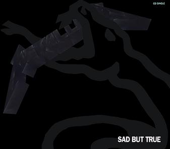
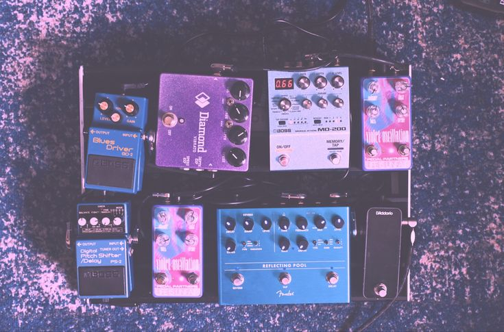

B.B. King: 1978 Era
(Live Guitar Tone)

Kansas - Carry On Wayward Son
(Lead Guitar Tone)

Metallica - Sad But True
(Rhythm & Lead Guitar Tones)
Smashing Pumpkins - 1979
(Lead Guitar Tone)

Alice In Chains - Nutshell
(Acoustic Guitar Tone)
Brandon Air: Shoegaze Chain
(Guitar FX Tones)
Foo Fighters - Everlong
(Rhythm Guitar Tone)

Iron Maiden - The Trooper
(Lead Guitar Tone)